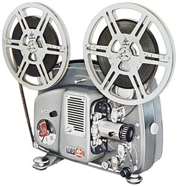
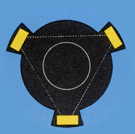

BOLEX 18 - 5
8mm Projector
1961
- OVERALL DIMENSIONS: 10 1/2" x 8 1/2" x 6 1/2"
- WEIGHT: 15 1/4 lbs.
- CONSTRUCTION: Cast aluminum; Two-tone grey finish; Carrying handle; Detachable cover.
- REEL CAPACITY: Reel arms accommodate 400 ft reels. Both reel arms fold downward for storage.
- THREADING: Simple manual threading with illustrations for loop forming on the projector body; film is placed onto sprockets with snap guides. Lens assembly pivots outward for easy loading and unloading.
- POWER: Two versions: 1) 50 cycle 110-240v AC power; 2) 60 cycle 110-125v AC power.
- LAMP: 8 volt, 50 watt lamp. Modern replacement: CXR 8V/50W
- LENS: Interchangeable lenses; Originally supplied with Bolex Hi-Fi f/1.3 lenses of 15, 20 or 25mm focal lengths. Other Bolex projector lenses were manufactured later.
- VARIABLE SPEED: 18 and 5 frames per second; 18fps reverse projection; Rapid motor rewind. Forward or reverse motion with lamp switched off at 18fps.
- OTHER FEATURES: Bolex anamorphic lens is easily attached to built-in holder for widescreen projection; Framing knob adjusts the claw for vertical alignment in the gate; Front leg for height adjustment and rear legs for leveling; Variable shutter automatically changes from three to nine blades when projection drops to 5fps; Catathermic filter preserves the film from excessive heating; A table lamp can be attached which switches off when the projector is running and relights again when stopped.
Notes and Comments

The Bolex 18-5 projected 8mm film at fixed running speeds of 18 and 5 frames per second in forward motion, and 18 fps in reverse; 18 fps forward and reverse with the lamp switched off was also possible.
Slow motion projection at 5 fps was an exclusive feature to the 18-5, made possible by a variable shutter blade. At this speed, a typical three-bladed shutter would produce a noticeable flicker and increase the risk of film burn.
However, Bolex solved this problem by designing a three-bladed shutter that expanded to nine blades when the speed was set to 5 fps; flicker and risk of film burn were eliminated, although picture brightness was slightly reduced.
A removeable lid, built-in carrying handle, folding reel arms and small size made this projector easy to transport. A plastic cover and an aluminum 400ft reel were included with this model (both with Bolex logo); larger carrying cases with room for accessories could be purchased separately.
Unfortunately, the Bolex logo plate, located on the side of the projector and detachable lid, were simply glued on. As such, it's common to find 18-5 and 18-5 Auto projectors with logo plates missing or loose.
Serial Numbers and Dates of Manufacture
The serial number on 18-5 projectors is located on the bottom of the base, directly behind the front leg; it can be used to determine the year in which it was manufactured. The table below lists the range of serial numbers allocated to the production run of both 50 Hz and 60 Hz variations of the manually threaded 18-5 projector.
| # | Year | ||
|---|---|---|---|
| 1300000 | — | 1340000 | 1961 |
| 1340000 | — | 1375000 | 1962 |
| 1375000 | — | 1389700 | 1963 |
| # | Year | ||
|---|---|---|---|
| 2050000 | — | 2066000 | 1961 |
| 2066000 | — | 2082000 | 1962 |
| 2082000 | — | 2088500 | 1963 |